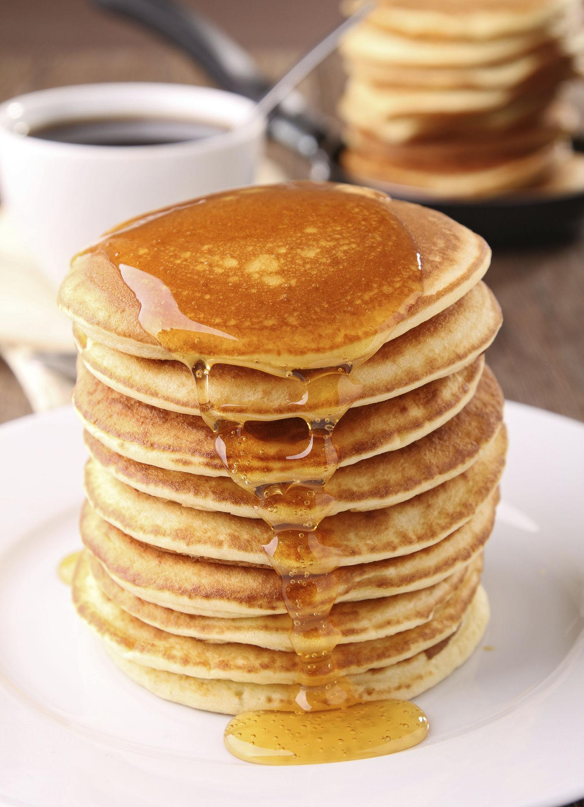

🡸
Pancakes

Description
Soft and fluffy pancakes that are perfect for breakfast. They are easy to
make and can be served with syrup, honey, or fresh fruit.
Ingredients
- 1 cup all-purpose flour
- 1 tablespoon sugar
- 1 teaspoon baking powder
- 1 cup milk
- 1 egg
- 1 tablespoon melted butter
Steps
- Mix the flour, sugar, and baking powder in a bowl.
- In another bowl, whisk together the milk, egg, and melted butter.
-
Pour the wet ingredients into the dry ingredients and mix until
combined.
- Heat a lightly greased pan over medium heat.
- Pour a small amount of batter onto the pan.
- Cook until bubbles form on the surface, then flip.
- Cook the other side until golden brown.
- Serve warm.